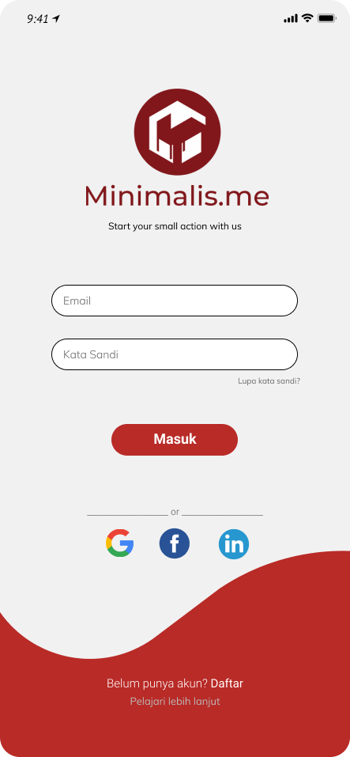

Minimalis.me merupakan sebuah aplikasi yang berbasis Android dan Website yang bertujuan mendorong mahasiswa melakukan gaya hidup minimalisme. Dalam aplikasi ini, mahasiswa sangat dimudahkan untuk mengorganisasi barang yang dimilikinya. Aplikasi ini juga menyediakan tempat untuk menjual dan membeli barang bekas dari seseorang yang barangnya telah lolos seleksi kualitas produk sebelumnya.
Latar Belakang
Langkah kami didasari dengan masalah yang dekat dengan kami sebagai mahasiswa. Perilaku yang cenderung impulsif, konsumtif, dan ekspresif membuat kita mengonsumsi banyak hal, termasuk barang-barang di sekitar kita. Setelahnya, barang-barang tersebut tidak dipakai lagi, menumpuk, dan terlupakan, apalagi dengan adanya pemakaian e-commerce yang memudahkan segala transaksi. Bahkan tersedia data yang menunjukkan pemakaian barang oleh generasi milenial hanya 1-5 kali kemudian tidak dipakai lagi.

Prototipe



Team Member

Annisa Ramadhani
Chief Executive Officer
Bayu Eka Prawira
Information and Technology Manager
Hafizhah Ashilah
Finance and Marketing Manager
Daffa Amanullah Setyawan
Public Relation Manager